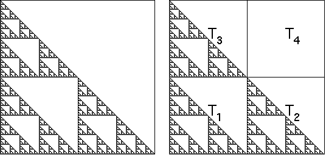

Find the rules to generate the images on the Fractal Image Sheet.
While practicing, it may help to enclose the image in a square, taken to be of side length 1.
To identify reduced copies, subdividing the square may be helpful. In some exercises you may need squares of different sizes.
|  |
| The Sierpinski gasket enclosed in a square, and divided into four subsquares. |
Find values for r, s, theta, e and f, recalling these conditions.
| * | r and s are decimals between -1 and 1 |
| * | r = s for pieces similar to the whole |
| * | negative r reflects across the y-axis, negative s reflects across the x-axis |
| * | theta, measured in degrees, specifies the rotation about the origin |
| * | positive theta is counter-clockwise, negative is clockwise |
| * | e specifies horizontal translation, f specifies vertical |
To understand the effect of each transformation, we adopt this convention:
After determining the values of r, s, theta, e, and f for each part of a fractal, run the IFS program with those values.
If the image generated matches the fractal, you are seeking you have been successful; if not, use the differences in the fractals to find the errors in your values. This process may take several tries.
If finding values for a picture is difficult, here are two approaches for building intuition. The first uses paper and scissors, the second uses the web and graphics software.
Return to IFSLab